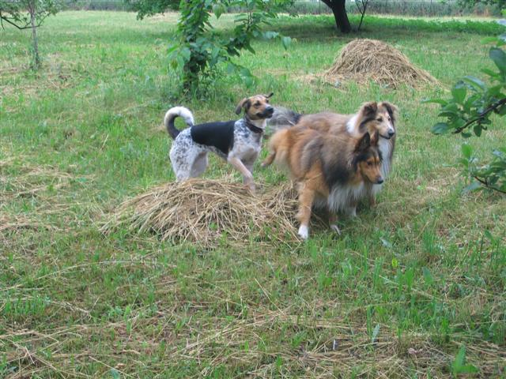
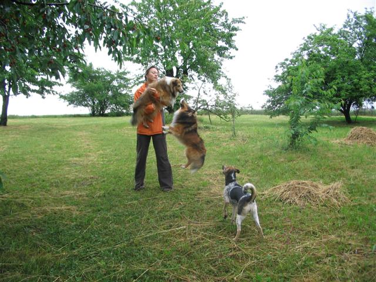
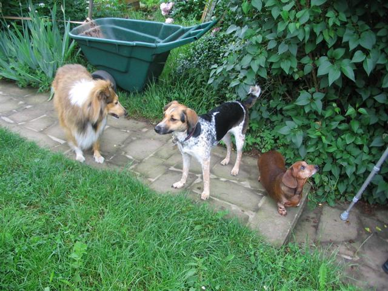
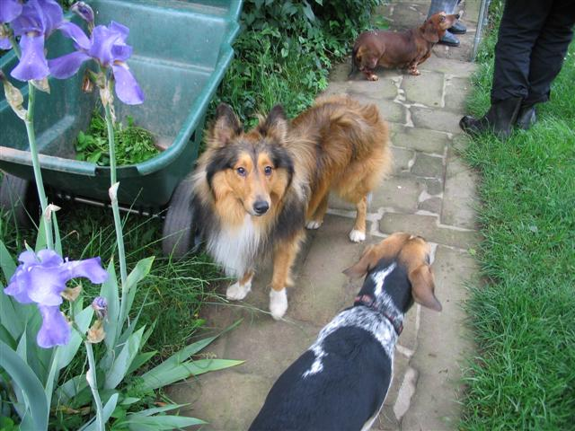
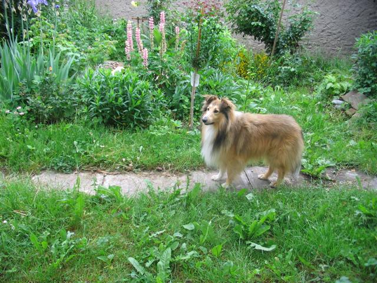
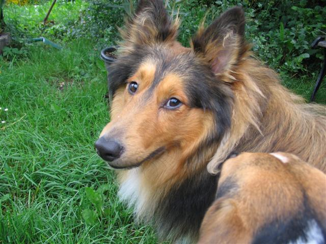
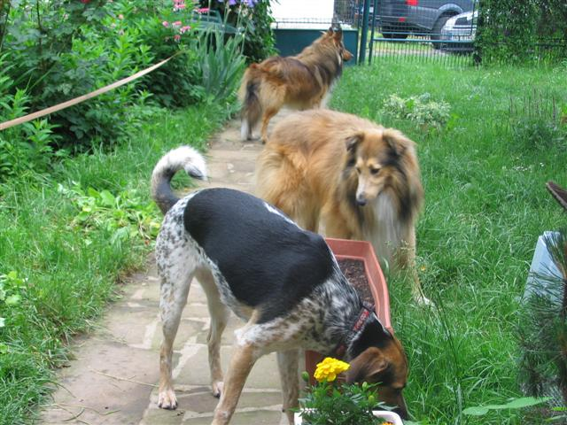

Navigace |
3 psi, 3 ženy, 1 auto, 1 chataV neděli jsme byli na otočku na chatě (z Prahy je to 120 km) a jak nadpis napovídá, v autě bylo docela plno. Zadní sedačku jsem sdílela s Nelou, Edýskem a Samem. Imho jít do fitka je proti takovému posilování se psy jen chabá rozvcička:-)  Nejen, že jsem musela hodně loktit, abych se do auta vešla. Kromě toho jsem totiž visela na obojku jedné nejmenované fence ČSP, ktera se jednak snažila zabrat co nejpohodlnější část, bez ohledu na to, že tu jsem představovala já. A také se neustále vztekle oháněla po Samovi, který zjistil, že nedávno dohárala, ovšem neměl šanci se ani pohnout, protože při jakémkoli pohybu Nela velmi přesvědčivě vřeštěla. Cesta zpět už byla o něco méně náročná, protože se Nela unavila na hlídání své cti, takže se po mně jen válela a chrněla, ovšem 12 pasivních kilo bylo i tak dost:-)  Šárka s Edýskem v náručí, Sam doskakuje a Nela zírá, co se to děje. Právě Šárka nás inspirovala k učení povelu "hopini", čili skoku do náruče. Nele sice musíme pomáhat nastaveným kolenem, které pomůže odrazu, ale vypadá to velmi efektně. Někdy je to přistání poněkud tvrdé a drápovité, ale co bys paničko chtěla, takhle jsi mě to naučila a takhle to umím. Taky se mi párkrát přihodilo, že si Nela spletla povel "hopini" a "ke mně" - marně jsem očekávala, že si přede mě vzorně (nebo prostě nějak:-) ) předsedne, namísto toho se na mě Nela rozplácla a nezachycena žuchla k zemi.  Zleva Edýsek, Nela a Dája. Naštěstí však Nela byla mimo auto hravá jako obvykle a neměla tendence se vztekle ohánět, takže si řádění na zahradě pořádně užili. Lehce teda vystrašili naši paní sousedku, protože se k bráně hnaly tři štěkající potvory (to jde všem třem moc pěkně), aby vzápětí následovalo stažení zpět k nám do bezpečí.  Vzadu Dája, Sam a Nelina záda (a máminy holinky a babiččiny hole) Taky se opět ukázalo, jakou máme doma zlodějku, protože Nela zdatně kradla třešně z košíku a nenápadně se kradla pryč pouze se šťopkou koukající z tlamy. Ještě se jí taky podařilo uloupit jeden jahodový knedlík, který ale radši upustila, když jsem se k ní blížila. Je to fena náročná, protože ze země třešně nežrala, zato pecky chodila plivat zpět ke košíku. Sam s Edýskem zlodějské sklony neměli (neb jsou lépe vychování:-) ), takže nějaké třešně zbyly i na nás.
 Edýsek na zahrádce. Vzhledem k tomu, že všichni tři jsou velcí průzkumníci, narozdíl od babičiny jezevčice Dájy, která raději vyhledává pouze prostory vybavené polštáři, jak je na ní vidět, musely jsme zbudovat ochraný plot na všechna rajčata, okurky, saláty, kopr atd.(fotodokumentace chybí). No, výsledkek nic moc, jen pár kolíků a mezi nima natažená stužka, ale svůj účel to víceméně splnilo, až na pár ladných podlezení (tzn.nebrali to jako překážku, ale novou zábavnější trasu:-) ) a krátkou procházku v rajčatech.
 Sam koukající, Nela ňuchající. Každopádně cesta na chatu splnila vícero účelů. Mj.psi byli notně utahaní, takže do pondělka jsme o Nele téměř nevěděli, Edýsek se Samem usínali pomalu vstoje už při nastupování do auta na cestu zpět:-) Šárka se prokázala jako výborný řidič, který se nenechá rozrušit ani třemi psy řádícími vzadu, máma jako odolný spolujezdec, ktrému se pod nohy vejde všechno, takže příště možná ještě narveme do auta i Rudolfa, aby to byla ještě větší legrace:-)

|